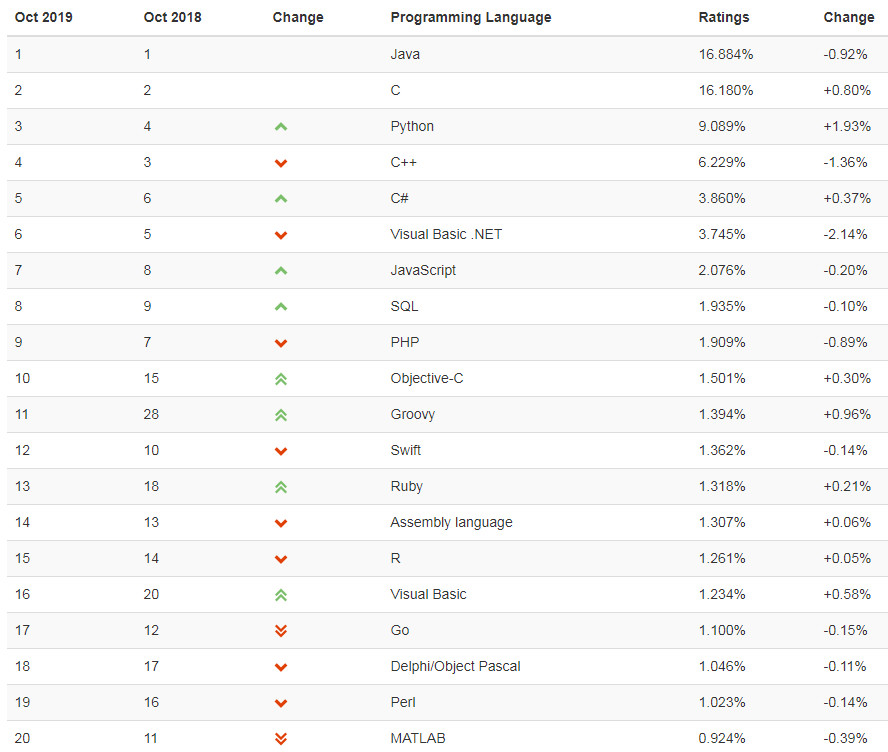

原文连接:https://www.cnblogs.com/xiasir/p/11706928.html
一丶编程与编程语言
1. 什么是编程：
计算机编程，就是告诉计算机该如何去做事。计算机可以实现的功能有很多，但是却不会独立思考，我们必须去提供尽可能详细的细节，用计算机能够明白的语言将程序（算法）告诉他。根据需求将自己的思维过程通过编程语言描述下来，并且告诉计算机去执行。
2. 什么是编程语言：
语言是人与人沟通的桥梁，编程语言就是人与计算机沟通的桥梁。人类编程更像是命令计算机去做某些事情，计算机更像是人的傀儡。
3.为什么要编程：
我们写程序的目的是为了让计算机去解决我们日常生活中的问题。人脑在处理大多数任务的时候是比计算机慢的，而通过编程语言将人的思维流程传达给计算机，让计算机替我们去执 行任务。从而来解放劳动力，提高我们的生活质量
4.编程语言分类
机器语言语言：执行速度最快，最复杂，开发效率最低
汇编语言：执行速度快，复杂，开发效率低
高级语言：
编译型：执行速度快，不依赖语言环境，跨平台差
解释型：跨平台好，一份代码，到处使用，执行速度慢，依赖解释器运行
5.主流编程语言：
世界上的编程语言有600多种，但真正大家主流在使用的最多二三十种，不同的语言有自己的特点和擅长领域，随着计算机的不断发展，新语言在不断诞生，也同时有很多老旧的语言慢慢无人用了。
编程语言排行榜（2019年10月）：



#C语言:
C语言是一种计算机程序设计语言，它既具有高级语言的特点，又具有汇编语言的特点。它由美国贝尔研究所的D.M.Ritchie于1972年推出，1978年后，C语言已先后被移植到大、中、小及微型机上，它可以作为工作系统设计语言，编写系统应用程序，也可以作为应用程序设计语言，编写不依赖计算机硬件的应用程序。它的应用范围广泛，具备很强的数据处理能力，不仅仅是在软件开发上，而且各类科研都需要用到C语言，适于编写系统软件，三维，二维图形和动画，具体应用比如单片机以及嵌入式系统开发。
#C++：
C++是C语言的继承的扩展，它既可以进行C语言的过程化程序设计，又可以进行以抽象数据类型为特点的基于对象的程序设计，还可以进行以继承和多态为特点的面向对象的程序设计。C++擅长面向对象程序设计的同时，还可以进行基于过程的程序设计，因而C++就适应的问题规模而论，大小由之。
C++不仅拥有计算机高效运行的实用性特征，同时还致力于提高大规模程序的编程质量与程序设计语言的问题描述能力。
#JAVA:
Java是一种可以撰写跨平台应用软件的面向对象的程序设计语言，是由Sun Microsystems公司于1995年5月推出的Java程序设计语言和Java平台（即JavaSE, JavaEE, JavaME）的总称。Java 技术具有卓越的通用性、高效性、平台移植性和安全性，广泛应用于个人PC、数据中心、游戏控制台、科学超级计算机、移动电话和互联网，同时拥有全球最大的开发者专业社群。在全球云计算和移动互联网的产业环境下，Java更具备了显著优势和广阔前景。
#PHP:
PHP（外文名:PHP: Hypertext Preprocessor，中文名：“超文本预处理器”）是一种通用开源脚本语言。语法吸收了C语言、Java和Perl的特点，利于学习，使用广泛，主要适用于Web开发领域
#Ruby
Ruby 是一种开源的面向对象程序设计的服务器端脚本语言，在 20 世纪 90 年代中期由日本的松本行弘（まつもとゆきひろ/Yukihiro Matsumoto）设计并开发。在 Ruby 社区，松本也被称为马茨（Matz）。Ruby 可运行于多种平台，如 Windows、MAC OS 和 UNIX 的各种版本。
#Python
Python是一门优秀的综合语言， Python的宗旨是简明、优雅、强大，在人工智能、云计算、金融分析、大数据开发、WEB开发、自动化运维、测试等方向应用广泛，已是全球第3大最流行的语言。
#Go
Go 是一个开源的编程语言，它能让构造简单、可靠且高效的软件变得容易。
Go是从2007年末由Robert Griesemer, Rob Pike, Ken Thompson主持开发，后来还加入了Ian Lance Taylor, Russ Cox等人，并最终于2009年11月开源，在2012年早些时候发布了Go 1稳定版本。现在Go的开发已经是完全开放的，并且拥有一个活跃的社区。
6.Python介绍：
python的创始人为吉多·范罗苏姆（Guido van Rossum）。1989年的圣诞节期间，Guido开始写能够解释Python语言语法的解释器。Python这个名字，来自Guido所挚爱的电视剧Monty Python’s Flying Circus。他希望这个新的叫做Python的语言，能符合他的理想：创造一种C和shell之间，功能全面，易学易用，可拓展的语言。
最新的TIOBE排行榜，Python赶超C++占据第3， Python崇尚优美、清晰、简单，是一个优秀并广泛使用的语言。
Python可以应用于众多领域，如：数据分析、组件集成、网络服务、图像处理、数值计算和科学计算等众多领域。目前业内几乎所有大中型互联网企业都在使用Python，如：Youtube、Dropbox、BT、Quora（中国知乎）、豆瓣、知乎、Google、Yahoo!、Facebook、NASA、百度、腾讯、汽车之家、美团等。
Python的种类
-
-
- Cpython
Python的官方版本，使用C语言实现，使用最为广泛，CPython实现会将源文件（py文件）转换成字节码文件（pyc文件），然后运行在Python虚拟机上。 - Jyhton
Python的Java实现，Jython会将Python代码动态编译成Java字节码，然后在JVM上运行。 - IronPython
Python的C#实现，IronPython将Python代码编译成C#字节码，然后在CLR上运行。（与Jython类似） - PyPy（特殊）
Python实现的Python，将Python的字节码字节码再编译成机器码。 - RubyPython、Brython ...
- Cpython
-
二丶Python安装
1.Windows：
下载python:https://www.python.org/downloads/
安装:设置安装路径，一路下一步
添加环境变量：【右键计算机】--》【属性】--》【高级系统设置】--》【高级】--》【环境变量】